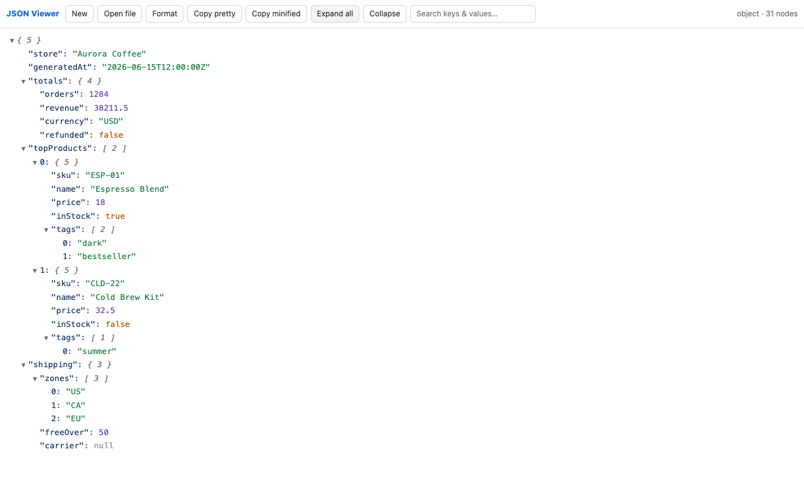

Fast on big payloads
Lazy expansion and 200-item chunks keep the page responsive, including on 100,000-element test data.
Format the current tab or open a private viewer. The tree renders incrementally, so large API responses stay responsive instead of building thousands of DOM nodes at once.
Chrome Web Store review pending The extension will become installable automatically after Google approves version 0.1.0.
Lazy expansion and 200-item chunks keep the page responsive, including on 100,000-element test data.
No analytics, accounts, background page reading, or data uploads. Processing stays in Chrome.
The extension reads only the active tab, and only after you click its toolbar icon.